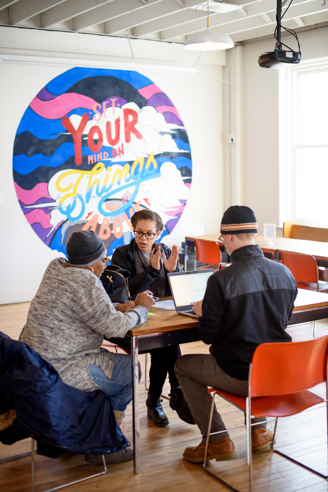

Now that you've gotten the ball rolling on a project (or multiple projects), let's explore how to stay prepared, adapt to changes, and continuously improve throughout the process.
The middle of an engaged learning project is where real growth happens—and where real challenges surface. Real-world projects rarely follow a straight line. Requirements shift, team dynamics evolve, clients face unexpected internal constraints, and research data yields surprising results.
The true value of this phase lies in developing resilience, adaptability, and ethical agility. Learning to manage "scope creep," navigate mid-project feedback, and re-align technical decisions with human needs are the exact experiences that distinguish top UMSI graduates. When you view friction not as a barrier, but as a natural part of the applied learning process, you develop the strategic problem-solving skills needed in modern information careers.
Navigating An Active Project in the Field

Working with a client begins with conducting research effectively. Channels for tracking progress and maintaining clear communication with project sponsors is just as important as final deliberables.
Having tools to record and analyze all phases of a project ensures stakeholders are on the same page, and data is streamlined.
Featured Resources & Handouts
Category
Resource Name
Purpose
Observation & Needfinding
Worksheet for Observations
Framework to categorize field observations (Activities, Environments,)
User Research
User-Needs-Insights Worksheet
Translates raw interview and observation data into actionable design insights.
Feedback Management
Feedback Worksheet
Structures mid-point feedback cycles between students, instructors, and partners.
Case Analysis
Engagement Cases Handout
Practical scenarios illustrating ethical dilemmas and resolution strategies.
Completing, Reflecting, and Translating Your Impact
The Power of Closing Well and Reflecting Deeply
A project is not complete simply because the final deliverable has been handed over. The final stages—closing, reflecting, and translating—are what transform a transient project into lasting organizational value and personal career momentum.
Responsible handoffs ensure that partners are not left with abandoned tools or undocumented systems they cannot maintain. Simultaneously, structured reflection forces you to pause and ask: What did I learn about my technical skills, my teamwork style, and the ethical impact of my work? Without reflection, experience is just something that happened to you; with reflection, experience becomes expertise. Learning to translate complex, messy project narratives into clear resume bullets and portfolio case studies is what turns your UMSI education into your greatest professional asset.
Provide clients with Deliverables they can Work with in the Future
Final Product delerables are most valuable when clients needs and preferences are at the forefront
Student Examples:
Local Cafe Website Redesign
Advancing Wildlife Research
Keeping Drains Clear in Lansing, MI
Ending the Experience (Responsible Offboarding & Handoff)
Responsible offboarding is an ethical mandate in engaged learning. Delivering high-quality technical assets is only half the job—ensuring the community partner or client can independently maintain, update, and benefit from your work long after the semester ends is what defines a successful project.
Re-evaluate final deliverables against original project commitments.
After the Experience (Career Integration & Portfolios)
Employers do not just hire technical skills—they hire people who can solve unscripted problems, collaborate in diverse teams, and deliver results under realistic constraints. This track guides you in bridging the gap between your academic work and your professional brand, helping you articulate the full narrative of your growth.